S7-1200有两套点对点通信指令，如图1所示。
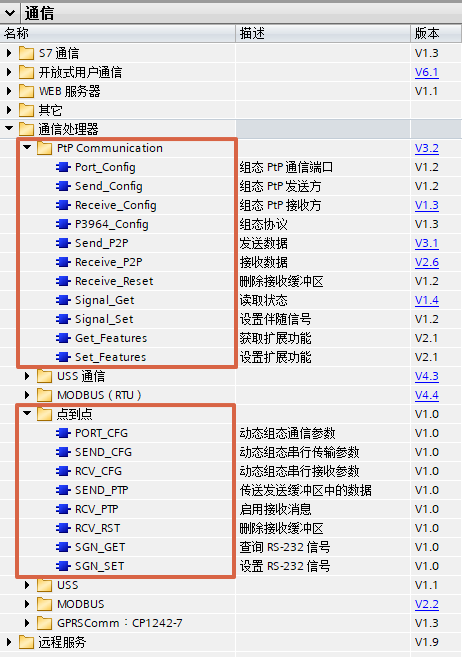
图1 指令列表
上述两套指令集区别如下表：
| 指令集 | 适用范围 | |
|---|---|---|
| PtP Communication | S7-1200中央机架 | CPU版本>=V4.1.1，CM1241版本>=V2.1， TIA PORTAL 版本>=V13SP1，CB1241没有版本要求 |
| 分布式IO | CPU版本>=V4.1.1，ET200SP/ET200MP分布式IO的串口模块 | |
| 点到点 | S7-1200中央机架 | CPU、TIA PORTAL、CM1241、CB1241 均没有版本限制 |
建议使用PtP Communication指令集的指令，因为指令和S7-1500兼容，并且指令版本一直在更新，点到点指令集不再更新，建议只用于老项目升级。
对于如图2中的指令，这些是用于在线修改串口模块硬件组态的指令，例如在线修改波特率，在线修改接收条件。一般不需要使用，具体使用可以参见TIA PORTAL帮助或者S7-1200系统手册。
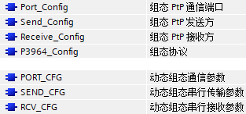
图2 组态指令
对于如图3中的指令，这些是用于硬流控操作的指令，通过信号设置激活相关的接收发送。除非使用硬流控，否则不需要使用，具体使用可以参见TIA PORTAL帮助或者S7-1200系统手册。
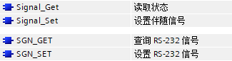
图3 流控指令
对于如图4中的指令，这些是用于实现一些扩展功能的指令，例如与第三方设备非标准MODBUS通信，伙伴不需要CRC校验，可以使用该指令禁用MODBUS CRC。一般不需要使用，具体使用可以参见TIA PORTAL帮助或者S7-1200系统手册。
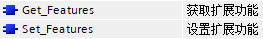
图4 扩展功能
对于如图5中的指令，这些是用于清除通信模块接收缓冲区的指令。
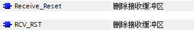
图5 清除缓冲区
对于一般情况下的自由口通信，都是只使用如图6中的发送接收指令。
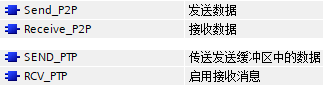
图6 发送接收
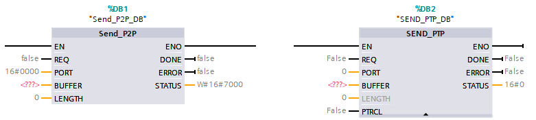
图7 发送指令
| Send_P2P | SEND_PTP | |
|---|---|---|
| EN | 使能，建议常接通 | |
| REQ | 发送触发信号，使用沿触发 | |
| PORT | 串口硬件模块标识符，可以在PLC变量表中找到，如图9所示 | |
| BUFFER | 发送区，一般使用P#指针形式，String类型或者WString类型，字符数组等，如果使用String类型或者WString类型，则伙伴方收到时不会看到字符串前面的最大长度和实际长度，也就是说相当于发送的是字符数组。 | |
| LENGTH | 实际发送的字节数，如果为0，则是全部发送 | |
| PCTRL | - | 没有意义 |
| DONE | 将数据发送至通信模块发送缓冲区完成，将有一个扫描周期置位 | |
| ERROR | 发送错误，将有一个扫描周期置位 | |
| STATUS | 通常显示状态代码，错误时会在ERROR为1的周期显示错误信息（16#8xxx） | |
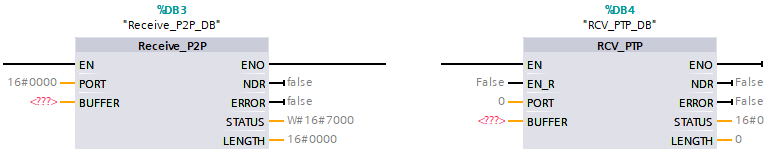
图8 接收指令
| Receive_P2P | RCV_PTP | |
|---|---|---|
| EN | 为True时，如果通信模块接收缓冲区有数据，则将其传送至BUFFER | 使能，建议常接通 |
| EN_R | - | 为True时，如果通信模块接收缓冲区有数据，则将其传送至BUFFER |
| PORT | 串口硬件模块标识符，可以在PLC变量表中找到，如图9所示 | |
| BUFFER | 接收区，一般使用P#指针形式，String类型或者WString类型，字符数组等，如果使用String类型或者WString类型，则即使伙伴方发送的是字符数组，指令也会为字符数组添加最大长度和实际长度成为字符串。 | |
| NDR | 将通信模块接收缓冲区的数据接收至BUFFER完成，将有一个扫描周期置位 | 如果EN_R为True时，则将通信模块接收缓冲区的数据接收至BUFFER完成，将有一个扫描周期置位 |
| ERROR | 指令错误，将有一个扫描周期置位 | |
| STATUS | 通常显示状态代码，错误时会在ERROR为1的周期显示错误信息（16#8xxx） | |
| LENGTH | 在接收完成时，将有一个扫描周期显示接收到的字节数 | |
 如果通信模块接收缓冲区包含有n次接收到的数据，则需要Receive_P2P EN/RCV_PTP EN_R n个扫描周期为True才能接收至BUFFER完成。
如果通信模块接收缓冲区包含有n次接收到的数据，则需要Receive_P2P EN/RCV_PTP EN_R n个扫描周期为True才能接收至BUFFER完成。
一般建议Receive_P2P EN/RCV_PTP EN_R常通或者接通一段时间而不是使用沿触发，这样通信模块接收缓冲区一旦接收到新数据，就可以立即接收至BUFFER。如果可能，可以把接收指令放在循环OB内尽可能快的调用。
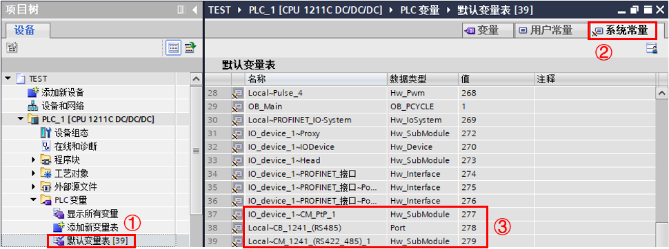
图9 系统常量
①在CPU中选择PLC变量表>默认变量表
②选择系统常量
③找到相关串口模块，建议直接将模块名称复制到PORT处
下面分为点对点指令与PtP Communication 指令分别介绍
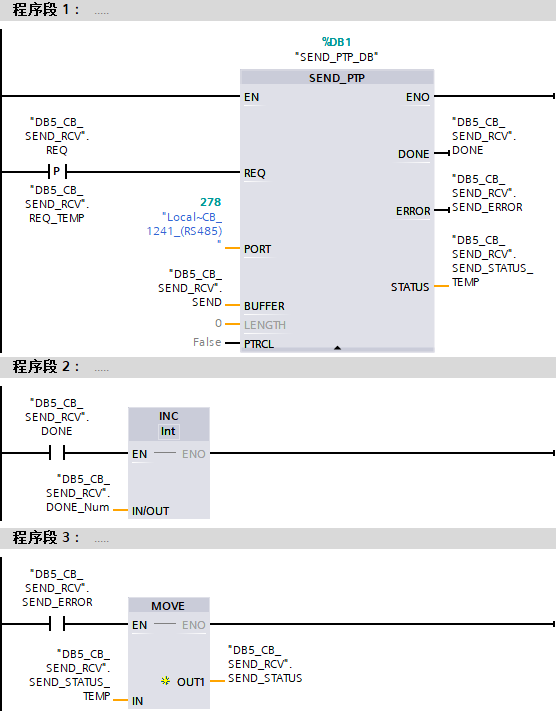
图10 点到点发送相关指令

图10 PtP Communication 发送相关指令
程序段1：触发发送
程序段2：发送完成位触发一个全局变量自加一，每完成一次该变量加一个数，可以通过这种方法检测是否发送完成
程序段3：发送错误位触发一个MOVE指令，当发送错误到来时，通过这种方法将STATUS的变量移动到一个全Word类型全局变量，发送错误代码将保存到该变量中
下面分为点对点指令与PtP Communication 指令分别介绍
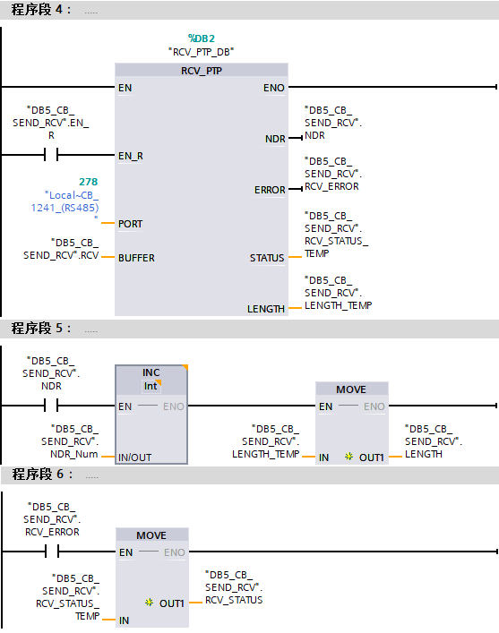
图12 点到点接收相关指令
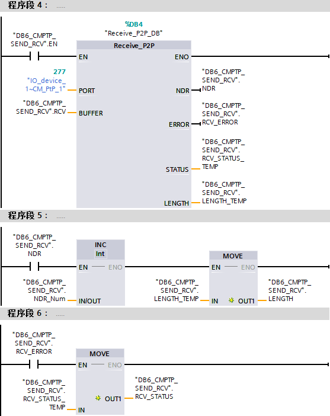
图13 PtP Communication 接收相关指令
程序段4：触发接收
程序段5：接收完成位触发一个全局变量自加一，每完成一次该变量加一个数，可以通过这种方法检测是否接收完成，同时将长度变量通过一个MOVE指令移动到一个UInt类型全局变量，接收长度将保存到该变量中
程序段6：接收错误位触发一个MOVE指令，接收送错误到来时，通过这种方法将STATUS的变量移动到一个Word类型全局变量，接收错误代码将保存到该变量中
通信任务：
1号站S7-1200使用CB1241，利用点对点指令发送接收。
2号站S7-1200使用ET200SP分布式IO的CMPTP模块，利用PtP Communication 指令发送接收。
1号站发送字符串'西门子'，2号站发送字符串'博大精深'。
 注：例子中1号站先发送，2号站先接收，实际取决于需要，对于PLC来说，先发送还是先接收都是可以的。
注：例子中1号站先发送，2号站先接收，实际取决于需要，对于PLC来说，先发送还是先接收都是可以的。
例子中使用系统存储器FirstScan，激活方式如图14所示。
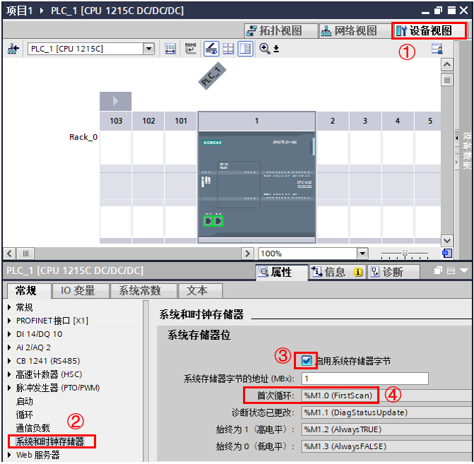
图14 设置系统存储器
①进入CPU的设备视图
②在属性>常规下选中系统和时钟存储器
③激活启用系统存储器字节，默认MB1
④即为FirstScan变量，默认M1.0
图15为1号站轮询：
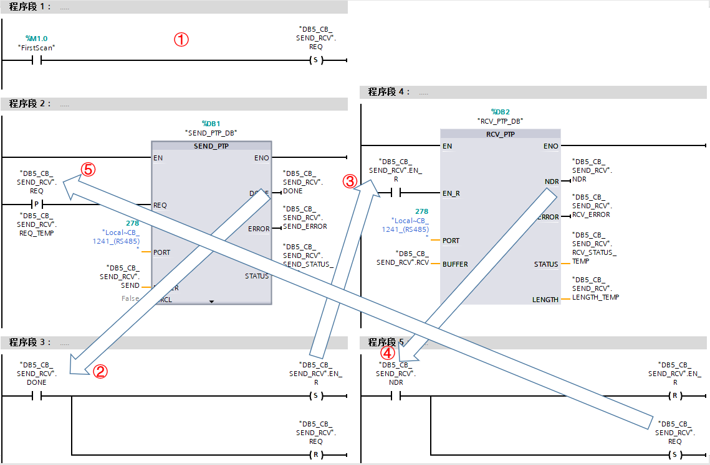
图15 1号站轮询
①使用系统存储器“FirstScan”激活第一次的发送
②发送DONE位置位接收请求，复位发送请求
③触发接收
④接收NDR位置位发送请求，复位接收请求
⑤触发下一次的发送
图16为2号站轮询：
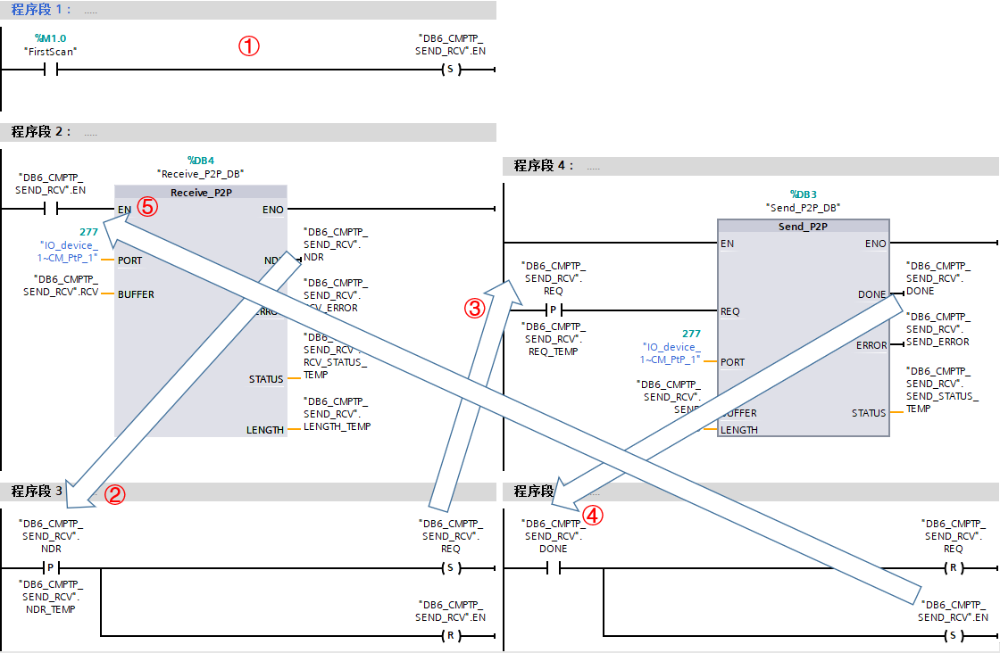
图16 2号站轮询
①使用系统存储器“FirstScan”激活第一次的接收
②接收NDR位的上升沿置位接收请求，复位发送请求
③触发发送
④发送DONE位置位接收请求，复位发送请求
⑤触发下一次的接收
通信结果：
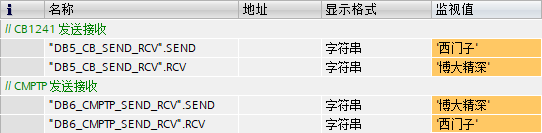
图17 通信结果
 如何处理对于字符串、字符数组等的发送接收？
如何处理对于字符串、字符数组等的发送接收？
考虑到PLC通常与第三方进行自由口通信，而通信内容通常是字符串，但是西门子的SIMATIC String或者WString是包含最大长度与实际长度的，而第三方的字符串对于西门子来说是Char数组或者WChar数组。
基于此点对点及PtP Communication 指令集均对字符串、字符数组的发送接收进行了优化，即：
第三方伙伴发送字符数组，PLC的接收指令BUFFER类型为字符数组，则接收成字符数组，BUFFER类型为字符串，则接收成字符串，接收指令自动将字符串的最大长度和实际长度补齐。
第三方伙伴接收字符数组，PLC的发送指令BUFFER类型为字符数组，则发送字符数组，BUFFER类型为字符串，同样发送字符数组，发送指令自动将字符串的最大长度和实际长度去掉。
简单的说PLC会按照字符数组的形式收发，发送或者接收BUFFER如果是字符串，则会进行相应的转换。以上面轮询为例，参见图18图19。
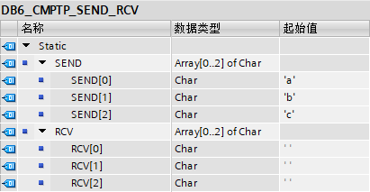
图18 修改2号站的发送接收区的String类型改为Char数组
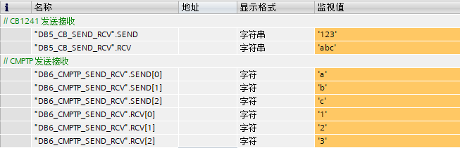
图19 收发结果
可以得知，1号站发送字符串‘123’，2号站接收到字符数组，每个字符分别是'1'、'2'、'3'。2号站发送字符数组，每个字符分别是'a'、'b'、'c'，1号站接收到字符串为'abc'。